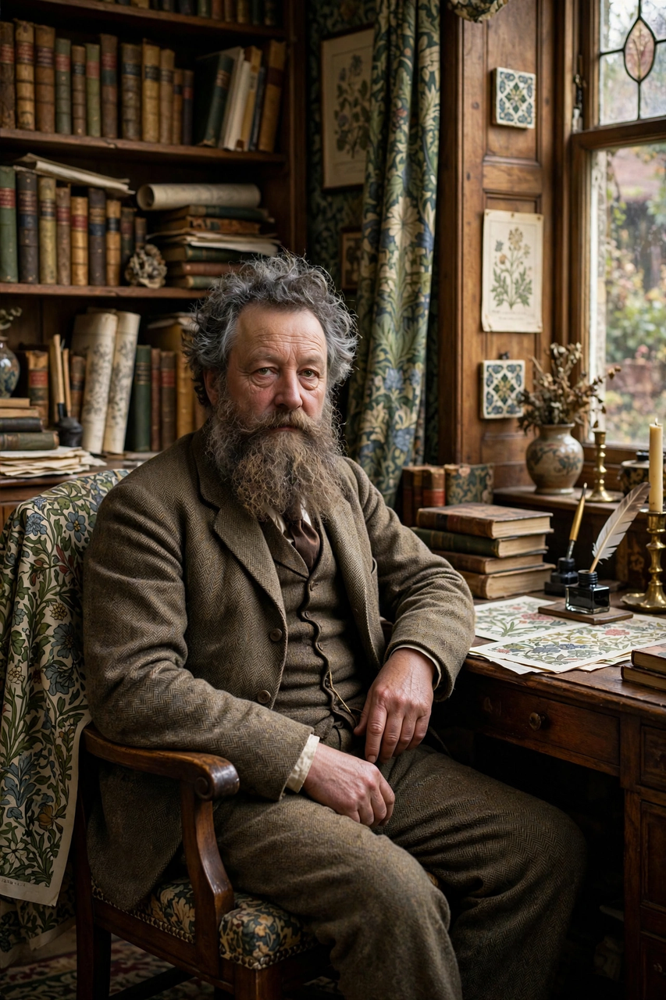

Wikipedia — The Free Encyclopedia

William Morris (24 March 1834 – 3 October 1896) was an English textile designer, poet, artist, writer and socialist activist associated with the Arts and Crafts movement. He was a major contributor to the revival of traditional British textile arts and methods of production, a founder of the Society for the Protection of Ancient Buildings, and the author of the utopian novel News from Nowhere (1890).
Morris was born at Walthamstow, then in Essex, into a wealthy family, and educated at Marlborough and Exeter College, Oxford, where he formed lifelong friendships with Edward Burne-Jones and the circle around Dante Gabriel Rossetti. He married Jane Burden in 1859 and commissioned Philip Webb to build the Red House at Bexleyheath, a landmark of domestic architecture.
In 1861 he founded the decorating firm Morris, Marshall, Faulkner & Co. (later Morris & Co.), which produced furniture, stained glass, tiles, embroidery and, most famously, wallpapers and printed textiles whose intricate patterns of flowers, birds and trellises — such as Strawberry Thief and Willow Boughs — remain in production. Morris believed design should unite beauty with honest craftsmanship and good working conditions, principles that animated the Arts and Crafts movement worldwide.
Morris wrote epic poetry (The Earthly Paradise), prose romances that helped invent modern fantasy, and translations of Icelandic sagas. From the 1880s he was a committed revolutionary socialist, lecturing and writing for the Social Democratic Federation and then his own Socialist League. In 1891 he founded the Kelmscott Press, whose edition of Chaucer (1896), illustrated by Burne-Jones, is regarded as one of the most beautiful printed books ever made.